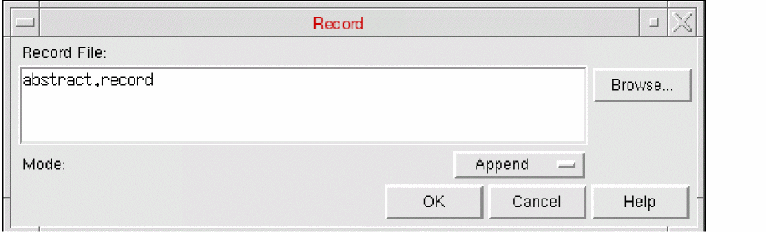

Recording Commands and Events in Abstract Generator
Every operation you perform during a session is recorded in a.record file. This allows you to rerun any session in batch mode and create user-defined macros with a minimum of manual intervention. Use the Record form to change the name of the record file, change the way the file is updated, or switch off recording altogether. The Record form controls the behavior of the record file, abstract.record.
By default, abstract.record is the name of the record file. If a file with that name already exists, the existing file is renamed to abstract.record.n where n is equal to 1, and the new record file is named abstract.record.
If the name of the record file is not changed in subsequent sessions, the abstract.record file is renamed to abstract.record.(n+1) to maintain the older versions of the record file. Therefore, the greater the numeric value in the record file name, the recent (latest) that file is.
For example, if the file name is not changed in three successive sessions, the following record files are created:
Therefore, the abstract.record file is always the current record file. The other files with a numeric suffix are backups of previous record files.
-
Choose File – Record to start this command. This displays the Record form.
 - In Record File, specify the name of the record file. Use the Browse function to help you locate an existing file or change the current directory. If you do not change the name of the record file, it will be overwritten during the next Abstract Generator session.
- Use the Mode pull-down list to select whether the commands of this session should overwrite or be appended to the record file or switch off the record function.
Related Topics
Replaying Commands in Abstract Generator
Return to top